Using neural networks to parameterize advection in L96
Contents
Using neural networks to parameterize advection in L96¶
%matplotlib inline
import math
import matplotlib.pyplot as plt
import numpy as np
from IPython.display import HTML
from L96_model import (
L96,
RK2,
RK4,
EulerFwd,
L96_eq1_xdot,
integrate_L96_2t,
)
from matplotlib.animation import FuncAnimation
time_method = RK4
Introduction¶
We are only going to use the single equation model from Lorenz (1996), or equation 3.1:
The reason we do this is because the advection term has a much larger control on the stability of the system than the scale-interaction term. It is fairly difficult to learn a model for the sub-grid scale term that causes L96 to go unstable so long as the timestep is sufficient to keep the advection term stable.
We still want to to look into the stability of a learned parameterization, but to explore the stability in more detail we are going to focus on learning a neural-network for the advection.
Building a 1d and 2d version of the single-equation L96 model:¶
The ‘1d’ in time, or advectionless version of L96 reduces to:
the steady state solution is simply:
and the time-dependent solution is an exponential:
We are going to generate both 2d (w/ advection) and 1d (w/o advection) versions of the L96 model. The 2d model will then be used as training data to build a non-local neural network that can reproduce the effect of including the advection term.
# - This is a standard GCM class including a polynomial parameterization in rhs of equation for tendency.
# In this experiment we will not be using the parameterization in this class but have left it for generality.
class GCM:
def __init__(self, F, parameterization, time_stepping=RK4):
self.F = F
self.parameterization = parameterization
self.time_stepping = time_stepping
def rhs(self, X, param):
return L96_eq1_xdot(X, self.F) + self.parameterization(param, X, self.F)
def __call__(self, X0, dt, nt, param=[0]):
# X0 - initial conditions, dt - time increment, nt - number of forward steps to take
# param - parameters of our closure
time, hist, X = (
dt * np.arange(nt + 1),
np.zeros((nt + 1, len(X0))) * np.nan,
X0.copy(),
)
hist[0] = X
for n in range(nt):
X = self.time_stepping(self.rhs, dt, X, param)
hist[n + 1], time[n + 1] = X, dt * (n + 1)
return hist, time
# - This is the same as the GCM with one notable exception.
# We have set the advection flag to False in the RHS of the L96 equation.
class GCM_1d:
def __init__(self, F, parameterization, time_stepping=time_method):
self.F = F
self.parameterization = parameterization
self.time_stepping = time_stepping
def rhs(self, X, param):
return L96_eq1_xdot(X, self.F, advect=False) + self.parameterization(
param, X, self.F
)
def __call__(self, X0, dt, nt, param=[0]):
# X0 - initial conditions, dt - time increment, nt - number of forward steps to take
# param - parameters of our closure
time, hist, X = (
dt * np.arange(nt + 1),
np.zeros((nt + 1, len(X0))) * np.nan,
X0.copy(),
)
hist[0] = X
for n in range(nt):
X = self.time_stepping(self.rhs, dt, X, param)
hist[n + 1], time[n + 1] = X, dt * (n + 1)
return hist, time
Sample configuration¶
First we will run the 2d and 1d version of the model with a modest forcing of \(F=10\).
We are going to try to simulate the effect of climate model drift on parameter space by running the same model but with \(F=20\).
# Chose a modest forcing and simulate for 100 cycles
Forcing, dt, T = 10, 0.01, 100
Forcing_x10 = 20 # Forcing*10
# Choose an random set of initial conditions
b = 10
init_cond = b * np.random.randn(8)
# ----------------------------------------------------------------
# We create the template 2d GCM here with the polynomial parameterization
# this model will be used to generate training data to learn the advection term.
naive_parameterization = lambda param, X, F: np.polyval(param, X)
gcm_2d = GCM(Forcing, naive_parameterization)
# ----------------------------------------------------------------
# We also create a super GCM for simulation with the forcing of 100.
# This will be used as the truth when we test the ability of the 1d model with the neural network to
# work outside of the parmameter space it was trained.
gcm_2d_x10 = GCM(Forcing_x10, naive_parameterization)
# ----------------------------------------------------------------
# Finally,we build the 1d GCM including the polynomial parameterization,
# and we create the corresponding super GCM with forcing squared.
gcm_1d = GCM_1d(Forcing, naive_parameterization)
gcm_1d_x10 = GCM_1d(Forcing_x10, naive_parameterization)
# Running the 2d and 1d versions of the GCM and GCM with F=100 ("_x10")
x2d, t2d = gcm_2d(
init_cond,
dt,
int(T / dt),
[
0.0,
],
)
x2d_x10, t2d_x10 = gcm_2d_x10(
init_cond,
dt,
int(T / dt),
[
0.0,
],
)
x1d, t1d = gcm_1d(
init_cond,
dt,
int(T / dt),
[
0.0,
],
)
x1d_x10, t1d_x10 = gcm_1d_x10(
init_cond,
dt,
int(T / dt),
[
0.0,
],
)
Metrics:¶
We are going to track the momentum and energy of L96 via the following metrics:
Energy:¶
These metrics are chosen to track the system. We are looking for a conservative property of the L96 system. It turns out in the single equation form of the L96 problem one of these two metrics is conserved by the advection process, which is the energy like term.
for tup in [2, T]:
F, ax = plt.subplots(1, 2, figsize=(10, 4))
a = ax.ravel()[0]
a.plot(t1d, np.sum(x1d, axis=1), label="1d", color="r", linewidth=2)
a.plot(t2d, np.sum(x2d, axis=1), label="2d", color="b", linewidth=2)
a.legend()
a.grid(True)
a.set_title("L96 momentum")
a.set_xlabel("t")
a.set_ylabel(r"$\sum_k X_k$")
a.set_xlim(0, tup)
a = ax.ravel()[1]
a.plot(t1d, np.sum(x1d**2, axis=1), label="1d", color="r", linewidth=2)
a.plot(t2d, np.sum(x2d**2, axis=1), label="2d", color="b", linewidth=2)
a.legend()
a.grid(True)
a.set_title("L96 energy")
a.set_xlabel("t")
a.set_ylabel(r"$\sum_k X_k^2$")
a.set_xlim(0, tup)
F.tight_layout();


Demo: Conservation of energy in L96¶
To demonstrate the conservation of energy in L96 advection we build a model with 0 forcing and 0 damping.
Note that the cyan line is an experiment only undergoing forcing by the advection term. The momentum is clearly not conserved, but the energy is.
# Zero the forcing
Forcing_demo = 0
# Zero the damping via a linear parameterization term:
P_nodamp = [1.0, 0.0]
# Running the 2d and 1d versions of the GCM and GCM with squared forcing ("s")
gcm_2d_demo = GCM(Forcing_demo, naive_parameterization)
# The parameterization here is countering the decay term to demonstrate the conservation of this system
x2d_demo, t2d_demo = gcm_2d_demo(init_cond, dt, int(T / dt), P_nodamp)
for tup in [2, T]:
F, ax = plt.subplots(1, 2, figsize=(10, 4))
a = ax.ravel()[0]
a.plot(
t2d_demo,
np.sum(x2d_demo, axis=1),
label="2d, F=0 no damp",
color="c",
linewidth=2,
)
a.plot(t2d, np.sum(x2d, axis=1), label="2d, F=10", color="b", linewidth=2)
a.legend()
a.grid(True)
a.set_title("L96 momentum")
a.set_xlabel("t")
a.set_ylabel(r"$\sum_k X_k$")
a.set_xlim(0, tup)
a = ax.ravel()[1]
a.plot(
t2d_demo,
np.sum(x2d_demo**2, axis=1),
label="2d, F=0 no damp",
color="c",
linewidth=2,
)
a.plot(t2d, np.sum(x2d**2, axis=1), label="2d, F=10", color="b", linewidth=2)
a.legend()
a.grid(True)
a.set_title("L96 energy")
a.set_xlabel("t")
a.set_ylabel(r"$\sum_k X_k^2$")
a.set_xlim(0, tup)
F.tight_layout();


Building a dataset of advection tendencies to learn¶
In the next section we are going to create a dataset of advection tendencies to learn
# The first set of data to learn is built with the standard forcing
obs = gcm_2d
model = gcm_1d
N = 50000
X = []
Xm1 = []
Xm2 = []
Xp1 = []
Adv = []
# randomize the initial condition and run 1000 time-step spin up with the real world model
init_condr = 10 * np.random.randn(8)
x_2, _ = gcm_2d(
init_condr,
0.01,
1000,
[
0.0,
],
)
for ti in range(N):
# Set the initial condition from the spin up/2d model
init_condr_up = x_2[-1, :]
# Real world values
x_2, _ = obs(
init_condr_up,
0.01,
1,
[
0.0,
],
)
# Simple model values
x_1, _ = model(
init_condr_up,
0.01,
1,
[
0.0,
],
)
# This is the difference in the tendency term due to neglecting 2d processes per time-step
Adv.append((x_2[-1, :] - x_1[-1, :]).ravel() / dt)
# Storing the state variable and its rolled forms for plotting and learning convenience
X.append(x_1[-1, :].ravel())
Xm1.append(np.roll(x_1[-1, :], 1).ravel())
Xm2.append(np.roll(x_1[-1, :], 2).ravel())
Xp1.append(np.roll(x_1[-1, :], -1).ravel())
X = np.array(X)
Xm1 = np.array(Xm1)
Xm2 = np.array(Xm2)
Xp1 = np.array(Xp1)
Adv = np.array(Adv)
# We use a second set of learning data with the F=20 forcing
obs = gcm_2d_x10
model = gcm_1d_x10
N = 50000
X_x10 = []
Xm1_x10 = []
Xm2_x10 = []
Xp1_x10 = []
Adv_x10 = []
# randomize the initial condition and run 1000 time-step spin up with the real world model
init_condr = 10 * np.random.randn(8)
x_2, _ = gcm_2d(
init_condr,
0.01,
1000,
[
0.0,
],
)
for ti in range(N):
# Set the initial condition from the spin up/2d model
init_condr_up = x_2[-1, :]
# Real world values
x_2, _ = obs(
init_condr_up,
0.01,
1,
[
0.0,
],
)
# Simple model values
x_1, _ = model(
init_condr_up,
0.01,
1,
[
0.0,
],
)
# This is the difference in the tendency term due to neglecting 2d processes per time-step
Adv_x10.append((x_2[-1, :] - x_1[-1, :]).ravel() / dt)
# Storing the state variable and its rolled forms for plotting and learning convenience
X_x10.append(x_1[-1, :].ravel())
Xm1_x10.append(np.roll(x_1[-1, :], 1).ravel())
Xm2_x10.append(np.roll(x_1[-1, :], 2).ravel())
Xp1_x10.append(np.roll(x_1[-1, :], -1).ravel())
X_x10 = np.array(X_x10)
Xm1_x10 = np.array(Xm1_x10)
Xm2_x10 = np.array(Xm2_x10)
Xp1_x10 = np.array(Xp1_x10)
Adv_x10 = np.array(Adv_x10)
Choosing a parameter to parameterize from¶
If we were simply looking at data and knew that the advection term was a missing force, we might start by looking at correlations with \(X_k\) values, but we would quickly relize that this is not effective.
Even taking part of the actual advection term does not yield a useful feature parameter.
In principle we should be able to learn a parameterization with all combinations of polynomials including all \(X_k\)’s, which should yield something close to the right answer.
plt.figure()
plt.plot(X, Adv, "k.")
plt.xlabel("$X_{k}$")
plt.ylabel("Advection")
plt.figure()
plt.plot(Xm1, Adv, "k.")
plt.xlabel("$X_{k-1}$")
plt.ylabel("Advection")
plt.figure()
plt.plot(Xp1, Adv, "k.")
plt.xlabel("$X_{k+1}$")
plt.ylabel("Advection")
plt.figure()
plt.plot(Xm2 - Xp1, Adv, "k.")
plt.xlabel("$X_{k-2}-X_{k+1}$")
plt.ylabel("Advection")
Text(0, 0.5, 'Advection')


Let’s now just assume that we knew the form of the advection term. We now get something that looks like a 1:1 linear relationship between the observed advection term and the correct feature parameter. It is not perfect because the values we are using for \(X_k\) are not consistent with the RK4 time stepping (if we used forward Euler we would get a perfit fit).
# We are going to assume we know the feature variable that we need to train the model.
# However, because of sampling across a time-step we will not fit a perfect 1:1,
# we end up with something very close to 1:1, but we will use a higher order polynomial that will
# fail when used outside the training data.
# First we will tune with the original F=10 output
plt.figure(figsize=(5, 4))
Feature = -Xm1 * (np.array(Xm2) - np.array(Xp1))
plt.plot(Feature, Adv, "r.")
plt.xlabel("$X_{k-1}(X_{k-2}-X_{k+1})$")
plt.ylabel("Advection tendency")
# This parameterization might fail when used outside of the training data.
# Note if we used the Forward Euler timestepping we would get closer to a 1:1 fit for the data.
P = np.polyfit(np.array(Feature).ravel(), np.array(Adv).ravel(), 1)
print("Fit (slope/bias): ", P)
FS = [-200, 200]
plt.plot(FS, np.polyval(P, FS), "g-", label="polynomial parameterization")
plt.plot(FS, FS, "k--", label="1:1")
plt.xlim(FS)
plt.ylim(FS)
plt.grid(True)
Fit (slope/bias): [ 1.00367303 -0.08262326]

# Create a new 1d GCM with a parameterization for the advection based on the known advection parameter
advection_parameterization = lambda param, X, F: np.polyval(
param, -np.roll(X, 1) * (np.roll(X, 2) - np.roll(X, -1))
)
gcm_1d_padv = GCM_1d(Forcing, advection_parameterization)
gcm_1d_padv_x10 = GCM_1d(Forcing_x10, advection_parameterization)
# Here is the 1d GCM with the learned advection via the linear parameterization
xplinear, tplinear = gcm_1d_padv(init_cond, dt, int(T / dt), P)
# And the same 1d GCM applied out of sample
xplinear_x10, tplinear_x10 = gcm_1d_padv_x10(init_cond, dt, int(T / dt), P)
def CompExps(Exp1, ExpN):
# Exp1 - reference experiment list
# ExpN - list of comparison experiments
try:
T1 = Exp1[0]
X1 = Exp1[1]
L1 = Exp1[2]
F, ax = plt.subplots(1, 2, figsize=(10, 4))
a = ax.ravel()[0]
a.plot(T1, np.sum(X1, axis=1), label=L1, color="k", linewidth=3)
a = ax.ravel()[1]
a.plot(T1, np.sum(X1**2, axis=1), label=L1, color="k", linewidth=3)
F2, ax2 = plt.subplots(1, figsize=(5, 4))
for Exp in ExpN:
TN = Exp[0]
XN = Exp[1]
LN = Exp[2]
a = ax.ravel()[0]
a.plot(TN, np.sum(XN, axis=1), label=LN, linewidth=2)
a = ax.ravel()[1]
a.plot(TN, np.sum(XN**2, axis=1), label=LN, linewidth=2)
_X = []
_Y = []
for ii in range(1, 100, 1):
_X.append(np.percentile(np.sum(X1[int(5 // dt) :] ** 2, axis=1), ii))
_Y.append(np.percentile(np.sum(XN[int(5 // dt) :] ** 2, axis=1), ii))
ax2.plot(_X, _Y, ".-", label=LN)
for ii in range(2):
a = ax.ravel()[ii]
a.legend()
a.grid(True)
ax[0].set(ylabel=r"$\sum_k X_k$", xlabel=r"$t$")
ax[1].set(ylabel=r"$\sum_k X_k^2$", xlabel=r"$t$")
F.tight_layout()
ax2.grid(True)
ax2.set(
xlabel="e 2d model",
ylabel="e 1d model w/ param",
title="q-q plot of energy in 2d and parameterized model",
)
LIM = np.nanmax(list(_X) + list(_Y))
ax2.set_xlim(0, LIM * 1.1)
ax2.set_ylim(0, LIM * 1.1)
ax2.plot([0, LIM], [0, LIM], "y-")
pass
except:
pass
# This (should) learn a stable 'parameterization' for the advection that is very close to the real advection term.
CompExps(
[t2d, x2d, "2d"],
[
[tplinear, xplinear, "1d w/ linear"],
],
)
 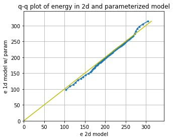
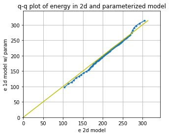
# It even extrapolates to the F=20 model
CompExps(
[t2d_x10, x2d_x10, "2d"],
[
[tplinear_x10, xplinear_x10, "1d w/ linear"],
],
)

What if we chose the wrong feature?¶
It turns out you can find features that are approximately correct and build a decent model for the advection
# Now we use a feature that is wrong to train the model
plt.figure()
Feature = -(np.array(Xm2) - np.array(Xp1) * np.array(Xm1))
plt.plot(Feature, Adv, "r.")
plt.xlabel("$(X_{k-1}-X_{k+1})$")
plt.ylabel("Advection tendency/Forcing")
P_wrong = np.polyfit(np.array(Feature).ravel(), np.array(Adv).ravel(), 1)
FS = np.sort(np.array(Feature).ravel())
plt.plot(FS, np.polyval(P_wrong, FS), "g-", label="polynomial parameterization");

# Create a new 1d GCM with a 2d parameterization
advection_parameterization_wrong = lambda param, X, F: np.polyval(
param, -(np.roll(X, 2) - np.roll(X, -1) * np.roll(X, 1))
)
gcm_1d_padv_wrong = GCM_1d(Forcing, advection_parameterization_wrong)
# Here is the 1d GCM with the learned advection
x_wrongp, t_wrongp = gcm_1d_padv_wrong(init_cond, dt, int(T / dt), P_wrong)
# This goes unstable very quickly.
# The neural network thus must be trained pretty well to avoid these instabilities.
CompExps(
[t2d, x2d, "2d"],
[
[t_wrongp, x_wrongp, "1d w/ wrong linear"],
],
)
/tmp/ipykernel_4013/3080806922.py:3: RuntimeWarning: overflow encountered in multiply
param, -(np.roll(X, 2) - np.roll(X, -1) * np.roll(X, 1))
/usr/share/miniconda/envs/L96M2lines/lib/python3.9/site-packages/numpy/lib/polynomial.py:771: RuntimeWarning: invalid value encountered in multiply
y = y * x + p[i]

Using the wrong feature gave us a very unstable model with advection that does not work.
In the following, we will try to learn the advection from a neural network. This result shows that we need to do something reasonable to have a stable system.
Using the 3-layer non-local neural network¶
Now we can forget about neading to know the right form of the advection term. We are instead just going to throw the information from the advection scheme to the non-local neural network and let it learn the advection for itself.
These follow the templates from the exercise led by Janni in week 4.
I’m quite new to neural networks, so please let me know if you see any obvious mistakes in my approach!
import torch
import torch.nn.functional as F
import torch.utils.data as Data
import torchvision
from sklearn.metrics import r2_score
from torch import nn, optim
from torch.autograd import Variable
from torch_lr_finder import LRFinder
np.random.seed(14) # For reproducibility
torch.manual_seed(14) # For reproducibility
<torch._C.Generator at 0x7f64c0bc7f10>
I’m going to start by scaling the data so that it is approximately order 1.¶
It looks like we can scaling \(X\) and the advection with the forcing and forcing squared, respectively (we will come back to this assumption).
plt.figure()
plt.plot(X, Adv, "k.")
plt.xlabel("$X_k$")
plt.ylabel("$Adv_k$")
# for F=10
X_F = X / Forcing
Adv_F = Adv / Forcing**2
print("Advection RMS:", np.sqrt(np.mean(Adv**2)))
print("X RMS:", np.sqrt(np.mean(X**2)))
plt.figure()
plt.plot(X_F, Adv_F, "k.")
plt.xlabel("$X_k/F$")
plt.ylabel("$Adv_k/F^2$")
print("Scaled Advection RMS:", np.sqrt(np.mean(Adv_F**2)))
print("Scaled X RMS:", np.sqrt(np.mean(X_F**2)))
# Split into 80% training and 20% testing.
L = int(len(X) * 0.8)
# Create non local training data
# Define a data loader (8 inputs, 8 outputs)
# Define our X,Y pairs (state, subgrid tendency) for the linear regression local network.local_torch_dataset = Data.TensorDataset(
torch_dataset = Data.TensorDataset(
torch.from_numpy(np.array(X_F[:L])).double(),
torch.from_numpy(np.array(Adv_F[:L])).double(),
)
BATCH_SIZE = 1024 # Number of sample in each batch
loader = Data.DataLoader(dataset=torch_dataset, batch_size=BATCH_SIZE, shuffle=True)
print("N training data: ", len(X_F[:L]))
print("N testing data: ", len(X_F[L:]))
# Define a test dataloader (8 inputs, 8 outputs)
torch_dataset_test = Data.TensorDataset(
torch.from_numpy(np.array(X_F[L:])).double(),
torch.from_numpy(np.array(Adv_F[L:])).double(),
)
loader_test = Data.DataLoader(
dataset=torch_dataset_test, batch_size=BATCH_SIZE, shuffle=True
)
Advection RMS: 28.75244977761929
X RMS: 5.138761346242214
Scaled Advection RMS: 0.2875244977761929
Scaled X RMS: 0.5138761346242214
N training data: 40000
N testing data: 10000


# define network structure in pytorch
import torch.nn.functional as FF
class Net_ANN(nn.Module):
def __init__(self):
super(Net_ANN, self).__init__()
self.linear1 = nn.Linear(8, 16) # 8 inputs, 16 neurons for first hidden layer
self.linear2 = nn.Linear(16, 16) # 16 neurons for second hidden layer
self.linear3 = nn.Linear(16, 8) # 8 outputs
# self.lin_drop = nn.Dropout(0.1) #regularization method to prevent overfitting.
def forward(self, x):
x = FF.relu(self.linear1(x))
x = FF.relu(self.linear2(x))
x = self.linear3(x)
return x
def train_model(net, criterion, trainloader, optimizer):
net.train()
test_loss = 0
for step, (batch_x, batch_y) in enumerate(trainloader): # for each training step
b_x = Variable(batch_x) # Inputs
b_y = Variable(batch_y) # outputs
if (
len(b_x.shape) == 1
): # If is needed to add a dummy dimension if our inputs are 1D (where each number is a different sample)
prediction = torch.squeeze(
net(torch.unsqueeze(b_x, 1))
) # input x and predict based on x
else:
prediction = net(b_x)
loss = criterion(prediction, b_y) # Calculating loss
optimizer.zero_grad() # clear gradients for next train
loss.backward() # backpropagation, compute gradients
optimizer.step() # apply gradients to update weights
def test_model(net, criterion, trainloader, optimizer, text="validation"):
net.eval() # Evaluation mode (important when having dropout layers)
test_loss = 0
with torch.no_grad():
for step, (batch_x, batch_y) in enumerate(
trainloader
): # for each training step
b_x = Variable(batch_x) # Inputs
b_y = Variable(batch_y) # outputs
if (
len(b_x.shape) == 1
): # If is needed to add a dummy dimension if our inputs are 1D (where each number is a different sample)
prediction = torch.squeeze(
net(torch.unsqueeze(b_x, 1))
) # input x and predict based on x
else:
prediction = net(b_x)
loss = criterion(prediction, b_y) # Calculating loss
test_loss = test_loss + loss.data.numpy() # Keep track of the loss
test_loss /= len(trainloader) # dividing by the number of batches
# print(len(trainloader))
print(text + " loss:", test_loss)
return test_loss
criterion = torch.nn.MSELoss() # MSE loss function
torch.manual_seed(14) # For reproducibility
nn_3l = Net_ANN().double()
n_epochs = 20 # Number of epocs
optimizer = optim.Adam(nn_3l.parameters(), lr=0.03)
validation_loss = list()
train_loss = list()
# time0 = time()
for epoch in range(1, n_epochs + 1):
train_model(nn_3l, criterion, loader, optimizer)
train_loss.append(test_model(nn_3l, criterion, loader, optimizer, "train"))
validation_loss.append(test_model(nn_3l, criterion, loader_test, optimizer))
plt.plot(train_loss, "b", label="training loss")
plt.plot(validation_loss, "r", label="validation loss")
plt.legend();
train loss: 0.027894471752065268
validation loss: 0.03130863010922509
train loss: 0.017887487383915233
validation loss: 0.01982629322141686
train loss: 0.013411773784793643
validation loss: 0.015123255154350038
train loss: 0.012390735079464173
validation loss: 0.013881348097200106
train loss: 0.011204667259798077
validation loss: 0.012591849963990945
train loss: 0.010888663210286698
validation loss: 0.012056019673814849
train loss: 0.010379089562999055
validation loss: 0.011730653060120347
train loss: 0.009811713269166482
validation loss: 0.01094958079026632
train loss: 0.010182373708500503
validation loss: 0.011561559879248609
train loss: 0.010252743412422442
validation loss: 0.011533039381879806
train loss: 0.009445319266040702
validation loss: 0.010744279435995076
train loss: 0.009822340096055166
validation loss: 0.010937549369358255
train loss: 0.01018312289119718
validation loss: 0.011323687064872556
train loss: 0.009289718840470928
validation loss: 0.010474885807236814
train loss: 0.009476854649065274
validation loss: 0.010448037652774323
train loss: 0.008944486103432795
validation loss: 0.010066674158874151
train loss: 0.008908825590401376
validation loss: 0.010058024291286037
train loss: 0.009538988232581574
validation loss: 0.010559388672236377
train loss: 0.008981648481217505
validation loss: 0.010045854128400982
train loss: 0.009677059206673153
validation loss: 0.010865829987220977

# Look how network does for the tendencies
preds22 = nn_3l(torch.from_numpy(np.array(X_F)).double())
plt.figure()
plt.plot(preds22.detach().numpy()[0:1000, 2], label="NN Predicted values")
plt.plot(Adv_F[:1000, 2], label="True values")
plt.legend()
plt.xlim(0, 200)
plt.ylabel("scaled tendency")
plt.xlabel("time step")
plt.figure(figsize=(5, 4.5))
plt.plot(Adv_F[:1000, 2], preds22.detach().numpy()[0:1000, 2], "k.")
plt.xlabel("Actual")
plt.ylabel("Prediction")
plt.grid(True)
plt.plot([-1, 1], [-1, 1], "y-")
pass
Xt = init_cond
Advr = -np.roll(Xt, 1) * (np.roll(Xt, 2) - np.roll(Xt, -1))
nnAdv = nn_3l(torch.from_numpy(np.array(Xt / Forcing)).double()).detach().numpy()
plt.figure()
plt.plot(Advr, "k-", label="Right")
plt.plot(nnAdv * Forcing**2, "r-", label="neural network")
plt.xlabel(r"$k$")
plt.ylabel("Advection tendency")
plt.legend()
<matplotlib.legend.Legend at 0x7f64c15d9730>


# - a GCM class including a neural network parameterization in rhs of equation for tendency
# The advection will be set to False
class GCM_network:
def __init__(self, F, network, time_stepping=time_method):
self.F = F
self.network = network
self.time_stepping = time_stepping
def rhs(self, X, param):
if self.network.linear1.in_features == 1:
X_torch = torch.from_numpy(X / self.F).double()
X_torch = torch.unsqueeze(X_torch, 1)
else:
X_torch = torch.from_numpy(np.expand_dims(X / self.F, 0)).double()
return L96_eq1_xdot(
X,
self.F + self.F**2 * np.squeeze(self.network(X_torch).data.numpy()),
advect=False,
) # Adding NN parameterization
def __call__(self, X0, dt, nt, param=[0]):
# X0 - initial conditions, dt - time increment, nt - number of forward steps to take
# param - parameters of our closure
time, hist, X = (
dt * np.arange(nt + 1),
np.zeros((nt + 1, len(X0))) * np.nan,
X0.copy(),
)
hist[0] = X
for n in range(nt):
X = self.time_stepping(self.rhs, dt, X, param)
hist[n + 1], time[n + 1] = X, dt * (n + 1)
return hist, time
# Run a test with the parameterization
# It takes some time, but usually the network goes unstable eventually
# F=10 model
gcm_nn = GCM_network(Forcing, nn_3l)
xnn, tnn = gcm_nn(init_cond, dt, int(100 / (dt)), nn_3l)
CompExps(
[t2d, x2d, "2d"],
[
[tnn, xnn, "1d w/ neural network"],
],
)
/tmp/ipykernel_4013/2792372065.py:25: RuntimeWarning: overflow encountered in square
a.plot(TN, np.sum(XN**2, axis=1), label=LN, linewidth=2)
/usr/share/miniconda/envs/L96M2lines/lib/python3.9/site-packages/numpy/core/fromnumeric.py:86: RuntimeWarning: overflow encountered in reduce
return ufunc.reduce(obj, axis, dtype, out, **passkwargs)
/tmp/ipykernel_4013/2792372065.py:31: RuntimeWarning: overflow encountered in square
_Y.append(np.percentile(np.sum(XN[int(5 // dt) :] ** 2, axis=1), ii))
/usr/share/miniconda/envs/L96M2lines/lib/python3.9/site-packages/numpy/lib/function_base.py:4009: RuntimeWarning: invalid value encountered in subtract
diff_b_a = subtract(b, a)
/usr/share/miniconda/envs/L96M2lines/lib/python3.9/site-packages/matplotlib/transforms.py:396: RuntimeWarning: overflow encountered in double_scalars
return (x0, y0, x1 - x0, y1 - y0)
---------------------------------------------------------------------------
IndexError Traceback (most recent call last)
File /usr/share/miniconda/envs/L96M2lines/lib/python3.9/site-packages/matplotlib_inline/backend_inline.py:43, in show(close, block)
39 try:
40 for figure_manager in Gcf.get_all_fig_managers():
41 display(
42 figure_manager.canvas.figure,
---> 43 metadata=_fetch_figure_metadata(figure_manager.canvas.figure)
44 )
45 finally:
46 show._to_draw = []
File /usr/share/miniconda/envs/L96M2lines/lib/python3.9/site-packages/matplotlib_inline/backend_inline.py:231, in _fetch_figure_metadata(fig)
228 # determine if a background is needed for legibility
229 if _is_transparent(fig.get_facecolor()):
230 # the background is transparent
--> 231 ticksLight = _is_light([label.get_color()
232 for axes in fig.axes
233 for axis in (axes.xaxis, axes.yaxis)
234 for label in axis.get_ticklabels()])
235 if ticksLight.size and (ticksLight == ticksLight[0]).all():
236 # there are one or more tick labels, all with the same lightness
237 return {'needs_background': 'dark' if ticksLight[0] else 'light'}
File /usr/share/miniconda/envs/L96M2lines/lib/python3.9/site-packages/matplotlib_inline/backend_inline.py:234, in <listcomp>(.0)
228 # determine if a background is needed for legibility
229 if _is_transparent(fig.get_facecolor()):
230 # the background is transparent
231 ticksLight = _is_light([label.get_color()
232 for axes in fig.axes
233 for axis in (axes.xaxis, axes.yaxis)
--> 234 for label in axis.get_ticklabels()])
235 if ticksLight.size and (ticksLight == ticksLight[0]).all():
236 # there are one or more tick labels, all with the same lightness
237 return {'needs_background': 'dark' if ticksLight[0] else 'light'}
File /usr/share/miniconda/envs/L96M2lines/lib/python3.9/site-packages/matplotlib/axis.py:1249, in Axis.get_ticklabels(self, minor, which)
1247 if minor:
1248 return self.get_minorticklabels()
-> 1249 return self.get_majorticklabels()
File /usr/share/miniconda/envs/L96M2lines/lib/python3.9/site-packages/matplotlib/axis.py:1201, in Axis.get_majorticklabels(self)
1199 def get_majorticklabels(self):
1200 """Return this Axis' major tick labels, as a list of `~.text.Text`."""
-> 1201 ticks = self.get_major_ticks()
1202 labels1 = [tick.label1 for tick in ticks if tick.label1.get_visible()]
1203 labels2 = [tick.label2 for tick in ticks if tick.label2.get_visible()]
File /usr/share/miniconda/envs/L96M2lines/lib/python3.9/site-packages/matplotlib/axis.py:1371, in Axis.get_major_ticks(self, numticks)
1369 r"""Return the list of major `.Tick`\s."""
1370 if numticks is None:
-> 1371 numticks = len(self.get_majorticklocs())
1373 while len(self.majorTicks) < numticks:
1374 # Update the new tick label properties from the old.
1375 tick = self._get_tick(major=True)
File /usr/share/miniconda/envs/L96M2lines/lib/python3.9/site-packages/matplotlib/axis.py:1277, in Axis.get_majorticklocs(self)
1275 def get_majorticklocs(self):
1276 """Return this Axis' major tick locations in data coordinates."""
-> 1277 return self.major.locator()
File /usr/share/miniconda/envs/L96M2lines/lib/python3.9/site-packages/matplotlib/ticker.py:2115, in MaxNLocator.__call__(self)
2113 def __call__(self):
2114 vmin, vmax = self.axis.get_view_interval()
-> 2115 return self.tick_values(vmin, vmax)
File /usr/share/miniconda/envs/L96M2lines/lib/python3.9/site-packages/matplotlib/ticker.py:2123, in MaxNLocator.tick_values(self, vmin, vmax)
2120 vmin = -vmax
2121 vmin, vmax = mtransforms.nonsingular(
2122 vmin, vmax, expander=1e-13, tiny=1e-14)
-> 2123 locs = self._raw_ticks(vmin, vmax)
2125 prune = self._prune
2126 if prune == 'lower':
File /usr/share/miniconda/envs/L96M2lines/lib/python3.9/site-packages/matplotlib/ticker.py:2079, in MaxNLocator._raw_ticks(self, vmin, vmax)
2076 igood = (steps < 1) | (np.abs(steps - np.round(steps)) < 0.001)
2077 steps = steps[igood]
-> 2079 istep = np.nonzero(steps >= raw_step)[0][0]
2081 # Classic round_numbers mode may require a larger step.
2082 if mpl.rcParams['axes.autolimit_mode'] == 'round_numbers':
IndexError: index 0 is out of bounds for axis 0 with size 0
# Try to train the data with slightly higher forcing (will give larger range of advection tendencies to learn)
plt.figure()
plt.plot(X, Adv, "k.")
plt.xlabel("$X_k$")
plt.ylabel("$Adv_k$")
# for F=20
X_F = X_x10 / Forcing_x10
Adv_F = Adv_x10 / Forcing_x10**2
print("Advection RMS:", np.sqrt(np.mean(Adv**2)))
print("X RMS:", np.sqrt(np.mean(X**2)))
plt.figure()
plt.plot(X_F, Adv_F, "k.")
plt.xlabel("$X_k/F$")
plt.ylabel("$Adv_k/F^2$")
print("Scaled Advection RMS:", np.sqrt(np.mean(Adv_F**2)))
print("Scaled X RMS:", np.sqrt(np.mean(X_F**2)))
# Split into 80% training and 20% testing.
L = int(len(X) * 0.8)
# Create non local training data
# Define a data loader (8 inputs, 8 outputs)
# Define our X,Y pairs (state, subgrid tendency) for the linear regression local network.local_torch_dataset = Data.TensorDataset(
torch_dataset = Data.TensorDataset(
torch.from_numpy(np.array(X_F[:L])).double(),
torch.from_numpy(np.array(Adv_F[:L])).double(),
)
BATCH_SIZE = 1024 # Number of sample in each batch
loader = Data.DataLoader(dataset=torch_dataset, batch_size=BATCH_SIZE, shuffle=True)
print("N training data: ", len(X_F[:L]))
print("N testing data: ", len(X_F[L:]))
# Define a test dataloader (8 inputs, 8 outputs)
torch_dataset_test = Data.TensorDataset(
torch.from_numpy(np.array(X_F[L:])).double(),
torch.from_numpy(np.array(Adv_F[L:])).double(),
)
loader_test = Data.DataLoader(
dataset=torch_dataset_test, batch_size=BATCH_SIZE, shuffle=True
)
Advection RMS: 28.75244977761929
X RMS: 5.138761346242214
Scaled Advection RMS: 0.18964363682577262
Scaled X RMS: 0.4074389090269141
N training data: 40000
N testing data: 10000
 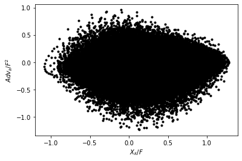
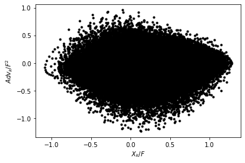
torch.manual_seed(14) # For reproducibility
nn_3l_x10 = Net_ANN().double()
n_epochs = 20 # Number of epocs
optimizer = optim.Adam(nn_3l_x10.parameters(), lr=0.03)
validation_loss = list()
train_loss = list()
# time0 = time()
for epoch in range(1, n_epochs + 1):
train_model(nn_3l_x10, criterion, loader, optimizer)
train_loss.append(test_model(nn_3l_x10, criterion, loader, optimizer, "train"))
validation_loss.append(test_model(nn_3l_x10, criterion, loader_test, optimizer))
plt.plot(train_loss, "b", label="training loss")
plt.plot(validation_loss, "r", label="validation loss")
plt.legend()
# Look how network does for the tendencies
preds22 = nn_3l_x10(torch.from_numpy(np.array(X_F)).double())
plt.figure()
plt.plot(preds22.detach().numpy()[0:1000, 2], label="NN Predicted values")
plt.plot(Adv_F[:1000, 2], label="True values")
plt.legend()
plt.xlim(0, 200)
plt.ylabel("scaled tendency")
plt.xlabel("time step")
plt.figure(figsize=(5, 4.5))
plt.plot(Adv_F[:1000, 2], preds22.detach().numpy()[0:1000, 2], "k.")
plt.xlabel("Actual")
plt.ylabel("Prediction")
plt.grid(True)
plt.plot([-1, 1], [-1, 1], "y-")
pass
Xt = init_cond
Advr = -np.roll(Xt, 1) * (np.roll(Xt, 2) - np.roll(Xt, -1))
nnAdv = nn_3l_x10(torch.from_numpy(np.array(Xt / Forcing)).double()).detach().numpy()
plt.figure()
plt.plot(Advr, "k-", label="Right")
plt.plot(nnAdv * Forcing_x10**2, "r-", label="neural network")
plt.xlabel(r"$k$")
plt.ylabel("Advection tendency")
plt.legend()
train loss: 0.017017911319478024
validation loss: 0.017400650346633104
train loss: 0.010954012031241269
validation loss: 0.01145973970272268
train loss: 0.008834208086460363
validation loss: 0.009121246587848731
train loss: 0.007626102992107314
validation loss: 0.007676614620615002
train loss: 0.0071468521953030415
validation loss: 0.007227510130202323
train loss: 0.0067248559996283905
validation loss: 0.006874255998601438
train loss: 0.006972269428015871
validation loss: 0.0071676298487796785
train loss: 0.006688743311270773
validation loss: 0.006785455186400033
train loss: 0.00618224710792642
validation loss: 0.006420435584626935
train loss: 0.005916192538349095
validation loss: 0.006151180617059443
train loss: 0.005915391520929675
validation loss: 0.006165752047419971
train loss: 0.005547734282432411
validation loss: 0.005827744226689834
train loss: 0.006481681147851072
validation loss: 0.006756216039902947
train loss: 0.0058624151295793275
validation loss: 0.00597965830354559
train loss: 0.005835771475011467
validation loss: 0.00609268240058458
train loss: 0.005852969500354148
validation loss: 0.006190045145650738
train loss: 0.006006765668850945
validation loss: 0.00624250190874171
train loss: 0.005612920674042915
validation loss: 0.005934055121454887
train loss: 0.00548960292212382
validation loss: 0.005774275643234602
train loss: 0.006815756280772729
validation loss: 0.007042218261042302
<matplotlib.legend.Legend at 0x7f64a2b875e0>


# Run a test with the parameterization built from F=20
# Usually the neural network resulting is much more stable, since it is trained for a wider range of conditions.
# F=10 model
gcm_nn = GCM_network(Forcing, nn_3l_x10)
xnn, tnn = gcm_nn(init_cond, dt, int(100 / (dt)), nn_3l_x10)
CompExps(
[t2d, x2d, "2d"],
[
[tnn, xnn, "1d w/ neural network"],
],
)


# F=20 model fails still
gcm_nn_x10 = GCM_network(Forcing_x10, nn_3l_x10)
xnn_x10, tnn_x10 = gcm_nn_x10(init_cond, dt, int(100 / (dt)), nn_3l_x10)
CompExps(
[t2d_x10, x2d_x10, "2d"],
[
[tnn_x10, xnn_x10, "1d w/ neural network"],
],
)

Here we experiment with adding conservation of “momentum”¶
It turns out the L96 advection does not conserve momentum, but this exercise shows that we can build a parameterization that does by adding it to the loss function.
def my_loss2(inpt, output, target):
# In which we add conservation of "momentum" to our loss function
loss = torch.mean(2 * (output - target) ** 2) + torch.mean(
torch.sum(output, axis=1) ** 2
)
return loss
# New training routines that use the new loss function
def train_model2(net, criterion, trainloader, optimizer):
net.train()
test_loss = 0
for step, (batch_x, batch_y) in enumerate(trainloader): # for each training step
b_x = Variable(batch_x) # Inputs
b_y = Variable(batch_y) # outputs
if (
len(b_x.shape) == 1
): # If is needed to add a dummy dimension if our inputs are 1D (where each number is a different sample)
prediction = torch.squeeze(
net(torch.unsqueeze(b_x, 1))
) # input x and predict based on x
else:
prediction = net(b_x)
loss = criterion(b_x, prediction, b_y) # Calculating loss
optimizer.zero_grad() # clear gradients for next train
loss.backward() # backpropagation, compute gradients
optimizer.step() # apply gradients to update weights
def test_model2(net, criterion, trainloader, optimizer, text="validation"):
net.eval() # Evaluation mode (important when having dropout layers)
test_loss = 0
with torch.no_grad():
for step, (batch_x, batch_y) in enumerate(
trainloader
): # for each training step
b_x = Variable(batch_x) # Inputs
b_y = Variable(batch_y) # outputs
if (
len(b_x.shape) == 1
): # If is needed to add a dummy dimension if our inputs are 1D (where each number is a different sample)
prediction = torch.squeeze(
net(torch.unsqueeze(b_x, 1))
) # input x and predict based on x
else:
prediction = net(b_x)
loss = criterion(b_x, prediction, b_y) # Calculating loss
test_loss = test_loss + loss.data.numpy() # Keep track of the loss
test_loss /= len(trainloader) # dividing by the number of batches
# print(len(trainloader))
print(text + " loss:", test_loss)
return test_loss
torch.manual_seed(14) # For reproducibility
nn_3l_loss2 = Net_ANN().double()
n_epochs = 30 # Number of epocs
optimizer = optim.Adam(nn_3l_loss2.parameters(), lr=0.02)
validation_loss = list()
train_loss = list()
# time0 = time()
for epoch in range(1, n_epochs + 1):
train_model2(nn_3l_loss2, my_loss2, loader, optimizer)
train_loss.append(test_model2(nn_3l_loss2, my_loss2, loader, optimizer, "train"))
validation_loss.append(test_model2(nn_3l_loss2, my_loss2, loader_test, optimizer))
plt.plot(train_loss, "b", label="training loss")
plt.plot(validation_loss, "r", label="validation loss")
plt.legend();
train loss: 0.06780057318765118
validation loss: 0.06839453234657086
train loss: 0.05908003674186576
validation loss: 0.05960033230462547
train loss: 0.04975394421780151
validation loss: 0.0505398841371455
train loss: 0.04184554537325056
validation loss: 0.04261666014047312
train loss: 0.03858678613753626
validation loss: 0.03929473868008712
train loss: 0.036353780543655755
validation loss: 0.03736404664155628
train loss: 0.03407389237591348
validation loss: 0.035095308941322616
train loss: 0.0321107996273542
validation loss: 0.033360509748588896
train loss: 0.03198375776998226
validation loss: 0.03316889387484594
train loss: 0.028683128303733724
validation loss: 0.029957285635036506
train loss: 0.02690660591670685
validation loss: 0.027956306274969554
train loss: 0.027991473485297513
validation loss: 0.028948594265144713
train loss: 0.02451904153183021
validation loss: 0.025259030534961795
train loss: 0.02907683715361991
validation loss: 0.029553034224965708
train loss: 0.02366426495006127
validation loss: 0.024330463494954695
train loss: 0.023081180949210873
validation loss: 0.023730953656297554
train loss: 0.02221285756394652
validation loss: 0.022814560988063354
train loss: 0.022502388530462904
validation loss: 0.02307696255199759
train loss: 0.02171580466878357
validation loss: 0.022210931920618956
train loss: 0.021724363631492348
validation loss: 0.022070685255482038
train loss: 0.021064891980835967
validation loss: 0.02151238973701976
train loss: 0.022508542607630074
validation loss: 0.022800296493711084
train loss: 0.02057105644858467
validation loss: 0.020815552755612556
train loss: 0.020167953996601467
validation loss: 0.020472483162083166
train loss: 0.019542225774250015
validation loss: 0.01976616242504168
train loss: 0.01911444734383189
validation loss: 0.0195921631758926
train loss: 0.019027458109079177
validation loss: 0.019224329739295897
train loss: 0.019685813770330043
validation loss: 0.019988665652029454
train loss: 0.018539078208721492
validation loss: 0.018820427707169286
train loss: 0.018569730646036835
validation loss: 0.018849065754595194

# The neural network now conserves momentum
preds22o = nn_3l(torch.from_numpy(np.array(X_F)).double())
preds22 = nn_3l_loss2(torch.from_numpy(np.array(X_F)).double())
plt.figure()
plt.plot(preds22.detach().numpy()[0:1000, 2], label="NN Predicted values")
plt.plot(Adv_F[:1000, 2], label="True values")
plt.legend()
plt.figure()
plt.plot(Adv_F[:1000, 2], preds22.detach().numpy()[0:1000, 2], "k.")
plt.xlabel("Actual")
plt.ylabel("Prediction")
plt.figure()
plt.plot(np.sum(preds22o.detach().numpy(), axis=1), "r.", label="original loss")
plt.plot(np.sum(preds22.detach().numpy(), axis=1), "k.", label="new loss")
plt.ylabel("Prediction momentum tendency")
plt.legend()
Xt = init_cond
Advr = -np.roll(Xt, 1) * (np.roll(Xt, 2) - np.roll(Xt, -1))
nnAdv = nn_3l_loss2(torch.from_numpy(np.array(Xt / Forcing)).double()).detach().numpy()
plt.figure()
plt.plot(Advr, "k-", label="actual")
plt.plot(nnAdv * Forcing**2, "r-", label="predicted")
pass;
 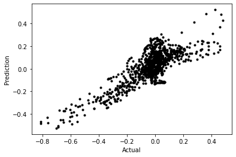
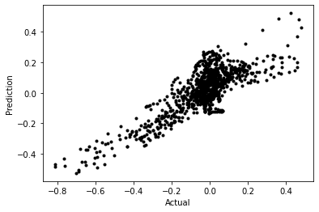


# This didn't help with stabilization...actually seems to hurt
gcm_nn2 = GCM_network(Forcing, nn_3l_loss2)
xnn2, tnn2 = gcm_nn2(init_cond, dt, int(T / (dt)), nn_3l_loss2)
CompExps(
[t2d, x2d, "2d"],
[
[tnn2, xnn2, "1d w/ NN conserving momentum"],
],
)
 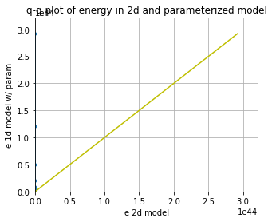
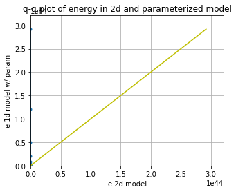
How about with some regularization?¶
torch.manual_seed(14) # For reproducibility
nn_3l_loss3 = Net_ANN().double()
n_epochs = 20 # Number of epocs
optimizer = optim.Adam(nn_3l_loss3.parameters(), lr=0.03, weight_decay=0.0015)
validation_loss = list()
train_loss = list()
# time0 = time()
for epoch in range(1, n_epochs + 1):
train_model(nn_3l_loss3, criterion, loader, optimizer)
train_loss.append(test_model(nn_3l_loss3, criterion, loader, optimizer, "train"))
validation_loss.append(test_model(nn_3l_loss3, criterion, loader_test, optimizer))
plt.plot(train_loss, "b", label="training loss")
plt.plot(validation_loss, "r", label="validation loss")
plt.legend()
# Look how network does for the tendencies
preds22 = nn_3l_loss3(torch.from_numpy(np.array(X_F)).double())
plt.figure()
plt.plot(preds22.detach().numpy()[0:1000, 2], label="NN Predicted values")
plt.plot(Adv_F[:1000, 2], label="True values")
plt.legend()
plt.xlim(0, 200)
plt.ylabel("scaled tendency")
plt.xlabel("time step")
plt.figure(figsize=(5, 4.5))
plt.plot(Adv_F[:1000, 2], preds22.detach().numpy()[0:1000, 2], "k.")
plt.xlabel("Actual")
plt.ylabel("Prediction")
plt.grid(True)
plt.plot([-1, 1], [-1, 1], "y-")
pass
Xt = init_cond
Advr = -np.roll(Xt, 1) * (np.roll(Xt, 2) - np.roll(Xt, -1))
nnAdv = (
nn_3l_loss3(torch.from_numpy(np.array(Xt / Forcing_x10)).double()).detach().numpy()
)
plt.figure()
plt.plot(Advr, "k-", label="Right")
plt.plot(nnAdv * Forcing_x10**2, "r-", label="neural network")
plt.xlabel(r"$k$")
plt.ylabel("Advection tendency")
plt.legend()
train loss: 0.025587266381347847
validation loss: 0.025998682222441633
train loss: 0.021843113481033623
validation loss: 0.022357056685430247
train loss: 0.020855952531732107
validation loss: 0.021462124542198785
train loss: 0.01961965635161695
validation loss: 0.02002735724027477
train loss: 0.01788874768689156
validation loss: 0.018248948827332453
train loss: 0.01652098397614831
validation loss: 0.01684881888279139
train loss: 0.01632462608149525
validation loss: 0.016636182916297215
train loss: 0.016170872974983118
validation loss: 0.016467962061935022
train loss: 0.016130626420954176
validation loss: 0.0165040952252066
train loss: 0.01608013610058251
validation loss: 0.016561943518598826
train loss: 0.016480429069102867
validation loss: 0.016832311769182744
train loss: 0.015535509865684357
validation loss: 0.015954449319426352
train loss: 0.015944566801765318
validation loss: 0.016321750016605362
train loss: 0.01590258477648687
validation loss: 0.016223776073690518
train loss: 0.01589268649650808
validation loss: 0.016246868174325486
train loss: 0.016568487898445984
validation loss: 0.016966734125379725
train loss: 0.015726607155775438
validation loss: 0.016116015959622216
train loss: 0.01606015304410868
validation loss: 0.01660711325906076
train loss: 0.016338888943016862
validation loss: 0.016751898137855874
train loss: 0.01586896194396454
validation loss: 0.016200450202019382
<matplotlib.legend.Legend at 0x7f64a2b48100>


# Weight decay regularization can help with stability, but when it does it sometimes ruins the
# model representation of the actual 'physics'
gcm_nn3 = GCM_network(Forcing, nn_3l_loss3)
xnn3, tnn3 = gcm_nn3(init_cond, dt, int(T / (dt)), nn_3l_loss3)
CompExps(
[t2d, x2d, "2d"],
[
[tnn3, xnn3, "1d w/ NN momentum reg."],
],
)

# Here it actually does an okay job of producing the F=20 simulation
gcm_nn3_x10 = GCM_network(Forcing_x10, nn_3l_loss3)
xnn3_x10, tnn3_x10 = gcm_nn3_x10(init_cond, dt, int(T / (dt)), nn_3l_loss3)
CompExps(
[t2d_x10, x2d_x10, "2d"],
[
[tnn3_x10, xnn3_x10, "1d w/ NN momentum reg."],
],
)


Try a different scaling term¶
Could scaling with the Forcing be the issue?
# Use the advection tendencies, splitting into 80% training and 20% testing.
L = int(len(X) * 0.8)
print(L)
ScX = np.sqrt(np.mean(X**2))
X_S = X_x10 / ScX
ScA = np.sqrt(np.mean(Adv**2))
Adv_S = Adv_x10 / ScA
# Create non local training data
# Define a data loader (8 inputs, 8 outputs)
# Define our X,Y pairs (state, subgrid tendency) for the linear regression local network.local_torch_dataset = Data.TensorDataset(
torch_dataset = Data.TensorDataset(
torch.from_numpy(np.array(X_S[:L])).double(),
torch.from_numpy(np.array(Adv_S[:L])).double(),
)
BATCH_SIZE = 1024 # Number of sample in each batch
loader = Data.DataLoader(dataset=torch_dataset, batch_size=BATCH_SIZE, shuffle=True)
# Define a test dataloader (8 inputs, 8 outputs)
torch_dataset_test = Data.TensorDataset(
torch.from_numpy(np.array(X_S[L:])).double(),
torch.from_numpy(np.array(Adv_S[L:])).double(),
)
loader_test = Data.DataLoader(
dataset=torch_dataset_test, batch_size=BATCH_SIZE, shuffle=True
)
40000
torch.manual_seed(14) # For reproducibility
nn_3l_loss4 = Net_ANN().double()
n_epochs = 20 # Number of epocs
optimizer = optim.Adam(nn_3l_loss4.parameters(), lr=0.03, weight_decay=0.001)
validation_loss = list()
train_loss = list()
# time0 = time()
for epoch in range(1, n_epochs + 1):
train_model(nn_3l_loss4, criterion, loader, optimizer)
train_loss.append(test_model(nn_3l_loss4, criterion, loader, optimizer, "train"))
validation_loss.append(test_model(nn_3l_loss4, criterion, loader_test, optimizer))
plt.plot(train_loss, "b", label="training loss")
plt.plot(validation_loss, "r", label="validation loss")
plt.legend()
# Look how network does for the tendencies
preds22 = nn_3l_loss4(torch.from_numpy(np.array(X_S)).double())
plt.figure()
plt.plot(preds22.detach().numpy()[0:1000, 2], label="NN Predicted values")
plt.plot(Adv_S[:1000, 2], label="True values")
plt.legend()
plt.xlim(0, 200)
plt.ylabel("scaled tendency")
plt.xlabel("time step")
plt.figure(figsize=(5, 4.5))
plt.plot(Adv_S[:1000, 2], preds22.detach().numpy()[0:1000, 2], "k.")
plt.xlabel("Actual")
plt.ylabel("Prediction")
plt.grid(True)
plt.plot([-1, 1], [-1, 1], "y-")
pass
Xt = init_cond
Advr = -np.roll(Xt, 1) * (np.roll(Xt, 2) - np.roll(Xt, -1))
nnAdv = nn_3l_loss4(torch.from_numpy(np.array(Xt / ScX)).double()).detach().numpy()
plt.figure()
plt.plot(Advr, "k-", label="Right")
plt.plot(nnAdv * ScA, "r-", label="neural network")
plt.xlabel(r"$k$")
plt.ylabel("Advection tendency")
plt.legend()
train loss: 2.6251409470712126
validation loss: 2.791693814620596
train loss: 1.8076291756359129
validation loss: 1.9258593992250994
train loss: 1.447231578262066
validation loss: 1.502893675465772
train loss: 1.3242432819341725
validation loss: 1.3753228255413428
train loss: 1.3822639096409244
validation loss: 1.418800107183218
train loss: 1.1785001939190285
validation loss: 1.206698131885743
train loss: 1.145951893848347
validation loss: 1.1817125823530796
train loss: 1.013334780313945
validation loss: 1.060515059297418
train loss: 0.9801289240973633
validation loss: 1.0152182838803616
train loss: 0.9668128719609802
validation loss: 1.017756960093464
train loss: 0.956716630991368
validation loss: 1.0151512743664335
train loss: 0.9097230516491338
validation loss: 0.9686925948703331
train loss: 0.9801845001083217
validation loss: 1.0282515716172178
train loss: 0.8981648980942202
validation loss: 0.9467088579021601
train loss: 0.8400637768752123
validation loss: 0.8968868857012564
train loss: 0.9393220157952571
validation loss: 0.9865036676746582
train loss: 0.8339247552111233
validation loss: 0.8772305110006924
train loss: 0.8423981392046416
validation loss: 0.8690877238946204
train loss: 0.8265349704035158
validation loss: 0.8738230609084578
train loss: 0.8435841846547028
validation loss: 0.882951821878898
<matplotlib.legend.Legend at 0x7f64a2748e20>


# - a GCM class including a neural network parameterization in rhs of equation for tendency
class GCM_network_S:
def __init__(self, F, network, time_stepping=time_method):
self.F = F
self.network = network
self.time_stepping = time_stepping
def rhs(self, X, param):
if self.network.linear1.in_features == 1:
X_torch = torch.from_numpy(X / ScX).double()
X_torch = torch.unsqueeze(X_torch, 1)
else:
X_torch = torch.from_numpy(np.expand_dims(X / ScX, 0)).double()
return L96_eq1_xdot(
X,
self.F + ScA * np.squeeze(self.network(X_torch).data.numpy()),
advect=False,
) # Adding NN parameterization
def __call__(self, X0, dt, nt, param=[0]):
# X0 - initial conditions, dt - time increment, nt - number of forward steps to take
# param - parameters of our closure
time, hist, X = (
dt * np.arange(nt + 1),
np.zeros((nt + 1, len(X0))) * np.nan,
X0.copy(),
)
hist[0] = X
for n in range(nt):
X = self.time_stepping(self.rhs, dt, X, param)
hist[n + 1], time[n + 1] = X, dt * (n + 1)
return hist, time
# Usually the network this produces works okay w/ F=10
gcm_nn4 = GCM_network_S(Forcing, nn_3l_loss4)
xnn4, tnn4 = gcm_nn4(init_cond, dt, int(T / dt), nn_3l_loss4)
CompExps(
[t2d, x2d, "2d"],
[
[tnn4, xnn4, "1d w/ rescaled NN mom."],
],
)


# This might work well for F=20
gcm_nn4_x10 = GCM_network_S(Forcing_x10, nn_3l_loss4)
xnn4_x10, tnn4_x10 = gcm_nn4_x10(init_cond, dt, int(T / dt), nn_3l_loss4)
CompExps(
[t2d_x10, x2d_x10, "2d"],
[
[tnn4_x10, xnn4_x10, "1d w/ rescaled NN mom."],
],
)

The actual conservation law should be for “energy”¶
Does this stabilize the model?
def my_loss3(inpt, output, target):
# In which we replace conservation of "momentum" with conservation of "energy"
loss = torch.mean(2 * (output - target) ** 2) + WT * torch.mean(
torch.sum(inpt * output, axis=1) ** 2
)
return loss
WT = 1
torch.manual_seed(14) # For reproducibility
nn_3l_loss5 = Net_ANN().double()
n_epochs = 50 # Number of epocs
optimizer = optim.Adam(nn_3l_loss5.parameters(), lr=0.01)
validation_loss = list()
train_loss = list()
# time0 = time()
for epoch in range(1, n_epochs + 1):
train_model2(nn_3l_loss5, my_loss3, loader, optimizer)
train_loss.append(test_model2(nn_3l_loss5, my_loss3, loader, optimizer, "train"))
validation_loss.append(test_model2(nn_3l_loss5, my_loss3, loader_test, optimizer))
plt.plot(train_loss, "b", label="training loss")
plt.plot(validation_loss, "r", label="validation loss")
plt.legend();
train loss: 11.216381555115953
validation loss: 11.472045290903015
train loss: 9.057407518927075
validation loss: 9.46210770045909
train loss: 8.49891353100995
validation loss: 8.870330994250763
train loss: 7.899412790881781
validation loss: 8.299051910323154
train loss: 7.553086541301087
validation loss: 7.817872023000497
train loss: 7.425953025061352
validation loss: 7.620512581848402
train loss: 7.536919103551158
validation loss: 7.915559900661195
train loss: 7.007857251547593
validation loss: 7.1943061920737765
train loss: 6.8489282517647
validation loss: 7.034663089817111
train loss: 6.575595268011803
validation loss: 6.766322788496316
train loss: 6.345717561199114
validation loss: 6.531150357332729
train loss: 6.273165914419215
validation loss: 6.5067153228310275
train loss: 6.142272417371985
validation loss: 6.352966486834957
train loss: 6.0956800073406665
validation loss: 6.298736897425674
train loss: 6.058534334758415
validation loss: 6.256268256172566
train loss: 5.9930931143003
validation loss: 6.1885539169719
train loss: 5.992383369219389
validation loss: 6.235751911294031
train loss: 5.876282380152522
validation loss: 6.133995830240806
train loss: 5.7824540301446214
validation loss: 6.113275248896015
train loss: 5.792204064512548
validation loss: 6.096464055233352
train loss: 5.581678721277957
validation loss: 5.880230199458713
train loss: 5.692833783402234
validation loss: 5.927050699278007
train loss: 5.648383309656024
validation loss: 5.909499405035416
train loss: 5.59445523097575
validation loss: 5.82369865524433
train loss: 5.644990905858959
validation loss: 5.938056360868175
train loss: 5.420401178105557
validation loss: 5.733964508020928
train loss: 5.5638196746509765
validation loss: 5.853898290440593
train loss: 5.520430321988838
validation loss: 5.794557705890965
train loss: 5.492789445703381
validation loss: 5.7281838001311565
train loss: 5.421629237492835
validation loss: 5.742507060525336
train loss: 5.631863907273109
validation loss: 5.925781185567427
train loss: 5.661693680793121
validation loss: 5.992479713441911
train loss: 5.427029978783364
validation loss: 5.71046342388653
train loss: 5.639458713593077
validation loss: 5.9153106186493165
train loss: 5.486636117786016
validation loss: 5.7262996349202755
train loss: 5.429296781649848
validation loss: 5.736082453451347
train loss: 5.486999525838204
validation loss: 5.833751576491702
train loss: 5.370036488646535
validation loss: 5.707603974066219
train loss: 5.484894328951797
validation loss: 5.768883242255026
train loss: 5.4656146445716125
validation loss: 5.668846980740539
train loss: 5.601281929260532
validation loss: 5.935156476026085
train loss: 5.3521699037303865
validation loss: 5.641087488874757
train loss: 5.307212592795296
validation loss: 5.622798184465608
train loss: 5.520491127147917
validation loss: 5.823072443521349
train loss: 5.422292402498741
validation loss: 5.673145039541221
train loss: 5.29166801205751
validation loss: 5.559928599894279
train loss: 5.319824182715218
validation loss: 5.583771995876424
train loss: 5.567560772212313
validation loss: 5.878712633555859
train loss: 5.367628719065971
validation loss: 5.579358923356295
train loss: 5.3622206593407125
validation loss: 5.627488596929991

preds22o = nn_3l_loss4(torch.from_numpy(np.array(X_S)).double())
preds22 = nn_3l_loss5(torch.from_numpy(np.array(X_S)).double())
plt.figure()
plt.plot(preds22.detach().numpy()[0:1000, 2], label="NN Predicted values")
plt.plot(Adv_S[:1000, 2], label="True values")
plt.legend()
plt.figure()
plt.plot(Adv_S[:1000, 2], preds22.detach().numpy()[0:1000, 2], "k.")
plt.xlabel("Actual")
plt.ylabel("Prediction")
plt.figure()
plt.plot(np.sum(X * preds22o.detach().numpy() * ScA, axis=1), "r.")
plt.plot(np.sum(X * preds22.detach().numpy() * ScA, axis=1), "k.")
plt.ylabel("Prediction energy")
Xt = init_cond
Advr = -np.roll(Xt, 1) * (np.roll(Xt, 2) - np.roll(Xt, -1))
nnAdv = nn_3l_loss5(torch.from_numpy(np.array(Xt / Forcing)).double()).detach().numpy()
plt.figure()
plt.plot(Advr, "k-", label="actual")
plt.plot(nnAdv * Forcing**2, "r-", label="predicted")
pass;

 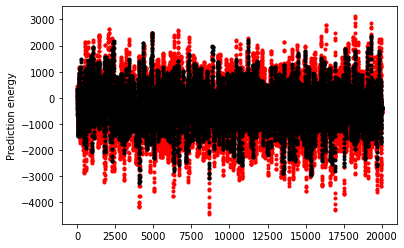
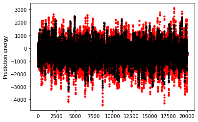

gcm_nn5 = GCM_network_S(Forcing, nn_3l_loss5)
xnn5, tnn5 = gcm_nn5(init_cond, dt, int(T / dt), nn_3l_loss5)
CompExps(
[t2d, x2d, "2d"],
[
[tnn5, xnn5, "1d w/ rescaled NN enrgy."],
],
)


gcm_nn5_x10 = GCM_network_S(Forcing_x10, nn_3l_loss5)
xnn5_x10, tnn5_x10 = gcm_nn5_x10(init_cond, dt, int(T / dt), nn_3l_loss5)
CompExps(
[t2d_x10, x2d_x10, "2d"],
[
[tnn5_x10, xnn5_x10, "1d w/ rescaled NN enrgy."],
],
)
 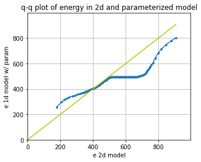
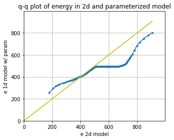
# Try with a higher weight?
WT = 50
torch.manual_seed(14) # For reproducibility
nn_3l_loss6 = Net_ANN().double()
n_epochs = 50 # Number of epocs
optimizer = optim.Adam(nn_3l_loss6.parameters(), lr=0.01)
validation_loss = list()
train_loss = list()
# time0 = time()
for epoch in range(1, n_epochs + 1):
train_model2(nn_3l_loss6, my_loss3, loader, optimizer)
train_loss.append(test_model2(nn_3l_loss6, my_loss3, loader, optimizer, "train"))
validation_loss.append(test_model2(nn_3l_loss6, my_loss3, loader_test, optimizer))
plt.plot(train_loss, "b", label="training loss")
plt.plot(validation_loss, "r", label="validation loss")
plt.legend();
train loss: 14.041390598889853
validation loss: 14.234668396449951
train loss: 13.900543006698083
validation loss: 14.095715056390839
train loss: 13.895706044561038
validation loss: 14.054933470862972
train loss: 13.871782481186623
validation loss: 14.01538538922659
train loss: 13.872443128721443
validation loss: 14.00165095716143
train loss: 13.868542591837514
validation loss: 13.977610629845026
train loss: 13.802309823931623
validation loss: 13.921211604323886
train loss: 13.698222502733358
validation loss: 13.827182838039544
train loss: 13.605176841567527
validation loss: 13.75203514689585
train loss: 13.390371347098121
validation loss: 13.581720854576883
train loss: 13.305854850697676
validation loss: 13.506060326698824
train loss: 13.297084386702949
validation loss: 13.473575085115076
train loss: 13.04833680832204
validation loss: 13.274494858257308
train loss: 13.17656244641169
validation loss: 13.326817520541473
train loss: 13.189296994908407
validation loss: 13.29215283670889
train loss: 12.818307502057916
validation loss: 13.021490980710169
train loss: 12.59135316471597
validation loss: 12.777804389830616
train loss: 12.805424183850837
validation loss: 13.02595617651048
train loss: 13.485240019230172
validation loss: 13.548050200864747
train loss: 12.90374230902215
validation loss: 13.038764871077102
train loss: 12.42718301419686
validation loss: 12.634319885429159
train loss: 12.463370349705507
validation loss: 12.628141753893456
train loss: 12.210143595000414
validation loss: 12.32511050055852
train loss: 12.329803147734328
validation loss: 12.424791239953132
train loss: 12.342665110234499
validation loss: 12.443896069150066
train loss: 12.90857729984863
validation loss: 13.133578587249875
train loss: 12.142148620245033
validation loss: 12.25144794833805
train loss: 12.193794545698648
validation loss: 12.30402108858109
train loss: 12.212567278699128
validation loss: 12.391855471861948
train loss: 12.307775865038547
validation loss: 12.485559641834401
train loss: 12.029415752512296
validation loss: 12.158213722179152
train loss: 12.395271992360733
validation loss: 12.507202177232257
train loss: 12.27541543335209
validation loss: 12.439871948102848
train loss: 12.145084499746206
validation loss: 12.287513389700916
train loss: 11.89858431921149
validation loss: 12.027974390390963
train loss: 12.37662260425047
validation loss: 12.410922110627206
train loss: 11.900426580510324
validation loss: 12.048449706845128
train loss: 12.362144629657935
validation loss: 12.59035768939638
train loss: 13.052230974229266
validation loss: 12.975376518432403
train loss: 12.234594039796654
validation loss: 12.471784801373806
train loss: 11.941550953802908
validation loss: 12.026236948129453
train loss: 11.841990567558813
validation loss: 11.905990482702759
train loss: 11.96001557129537
validation loss: 12.080244249899248
train loss: 12.156735344864067
validation loss: 12.377496689984172
train loss: 12.100891387613455
validation loss: 12.311596638303648
train loss: 12.25670194610124
validation loss: 12.470766103307605
train loss: 12.516196168200802
validation loss: 12.829684123738673
train loss: 11.998568953514063
validation loss: 12.04187617194452
train loss: 12.324638010773768
validation loss: 12.443229817288682
train loss: 11.953117160865151
validation loss: 12.162244801722556

preds22o = nn_3l_loss5(torch.from_numpy(np.array(X_S)).double())
preds22 = nn_3l_loss6(torch.from_numpy(np.array(X_S)).double())
plt.figure()
plt.plot(preds22.detach().numpy()[0:1000, 2], label="NN Predicted values")
plt.plot(Adv_S[:1000, 2], label="True values")
plt.legend()
plt.figure()
plt.plot(Adv_S[:1000, 2], preds22.detach().numpy()[0:1000, 2], "k.")
plt.xlabel("Actual")
plt.ylabel("Prediction")
plt.figure()
plt.plot(np.sum(preds22o.detach().numpy(), axis=1) * ScA, "r.")
plt.plot(np.sum(preds22.detach().numpy(), axis=1) * ScA, "k.")
plt.ylabel("Prediction momentum")
plt.figure()
plt.plot(np.sum(X * preds22o.detach().numpy(), axis=1) * ScA, "r.")
plt.plot(np.sum(X * preds22.detach().numpy(), axis=1) * ScA, "k.")
plt.ylabel("Prediction energy")
Xt = init_cond
Advr = -np.roll(Xt, 1) * (np.roll(Xt, 2) - np.roll(Xt, -1))
nnAdv = nn_3l_loss6(torch.from_numpy(np.array(Xt / Forcing)).double()).detach().numpy()
plt.figure()
plt.plot(Advr, "k-", label="actual")
plt.plot(nnAdv * Forcing**2, "r-", label="predicted")
pass;


gcm_nn6 = GCM_network_S(Forcing, nn_3l_loss6)
xnn6, tnn6 = gcm_nn6(init_cond, dt, int(T / dt), nn_3l_loss6)
gcm_nn6_x10 = GCM_network_S(Forcing_x10, nn_3l_loss6)
xnn6_x10, tnn6_x10 = gcm_nn6_x10(init_cond, dt, int(T / dt), nn_3l_loss6)
CompExps(
[t2d, x2d, "2d"],
[
[tnn6, xnn6, "1d w/ rescaled NN enrgy 20"],
],
)


CompExps(
[t2d_x10, x2d_x10, "2d"],
[
[tnn6_x10, xnn6_x10, "1d w/ rescaled NN enrgy 20"],
],
)


NN inside of time-stepping algorithm¶
One issue may be that the network is applied as a forward Euler step. Let’s try moving the network inside the RHS that is passed to the RK4 algorithm
import torch
def L96_eq1_xdot_NN(X, F, NN, advect=True):
"""
Calculate the time rate of change for the X variables for the Lorenz '96, equation 1:
d/dt X[k] = -X[k-2] X[k-1] + X[k-1] X[k+1] - X[k] + F
Args:
X : Values of X variables at the current time step
F : Forcing term
Returns:
dXdt : Array of X time tendencies
"""
K = len(X)
Xdot = np.zeros(K)
if NN.linear1.in_features == 1:
X_torch = torch.from_numpy(X / ScX).double()
X_torch = torch.unsqueeze(X_torch, 1)
else:
X_torch = torch.from_numpy(np.expand_dims(X / ScX, 0)).double()
if advect:
Xdot = np.roll(X, 1) * (np.roll(X, -1) - np.roll(X, 2)) - X + F
else:
Xdot = -X + F + ScA * np.squeeze(NN(X_torch).data.numpy())
# for k in range(K):
# Xdot[k] = ( X[(k+1)%K] - X[k-2] ) * X[k-1] - X[k] + F
return Xdot
# - a GCM class including a neural network parameterization in rhs of equation for tendency
class GCM_network_tsNN:
def __init__(self, F, network, time_stepping=time_method):
self.F = F
self.network = network
self.time_stepping = time_stepping
def rhs(self, X, param):
return L96_eq1_xdot_NN(
X, self.F, self.network, advect=False
) # Adding NN parameterization
def __call__(self, X0, dt, nt, param=[0]):
# X0 - initial conditions, dt - time increment, nt - number of forward steps to take
# param - parameters of our closure
time, hist, X = (
dt * np.arange(nt + 1),
np.zeros((nt + 1, len(X0))) * np.nan,
X0.copy(),
)
hist[0] = X
for n in range(nt):
X = self.time_stepping(self.rhs, dt, X, param)
hist[n + 1], time[n + 1] = X, dt * (n + 1)
return hist, time
# Run a test with the parameterization
gcm_nnRK = GCM_network_tsNN(Forcing, nn_3l_x10, time_stepping=RK4)
xnnRK, tnnRK = gcm_nnRK(init_cond, dt, int(100 / (dt)), nn_3l)
CompExps(
[t2d, x2d, "2d"],
[
[tnnRK, xnnRK, "1d w/ RK4 neural network"],
],
)


# Run a test with the parameterization
gcm_nnRK_x10 = GCM_network_tsNN(Forcing_x10, nn_3l_x10, time_stepping=RK4)
xnnRK_x10, tnnRK_x10 = gcm_nnRK_x10(init_cond, dt, int(100 / (dt)), nn_3l)
CompExps(
[t2d_x10, x2d_x10, "2d"],
[
[tnnRK_x10, xnnRK_x10, "1d w/ RK4 neural network"],
],
)

Conclusions¶
Conservation properties can be added to the loss function, but may not improve stability.
Conservation can unintentially over-regulate a network.
Training a network for a wider parameter space than the model sees can help with stability.
Training with F=20 helps F=10 stay stable
Training for too broad of a parameter space may limit model ability to capture complex behavior (not shown, with F=100 tuning)
Careful scaling is needed to help extrapolate results across parameter space.
It was wrong to scale with forcing, scaling from the mean helps.
We could also consider more stability approaches, for example:
How you build the parameterization matters. Building a parameterization for a flux instead of a flux tendency can help avoid non-conservation (not as applicable to our problem here, but seen in boundary layer parameterizations).
Coupled online learning can help tune networks that can learn evolving parameter spaces (see Rasp 2020 and their notebooks).